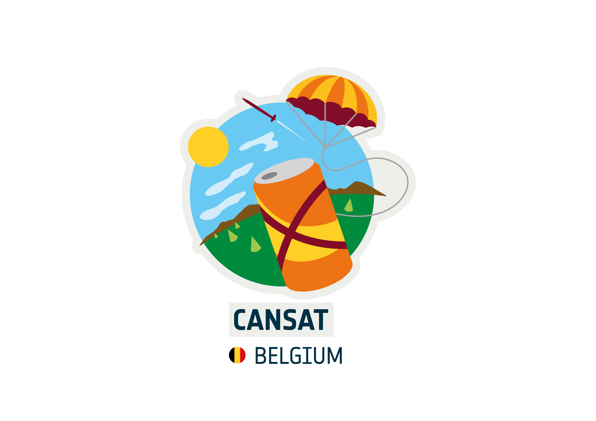
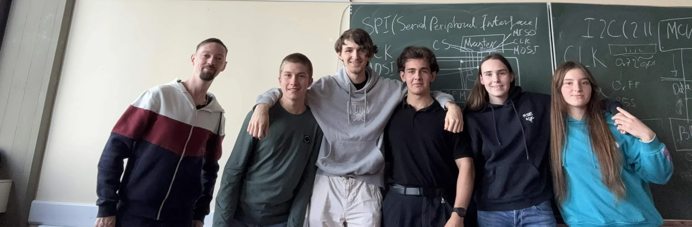
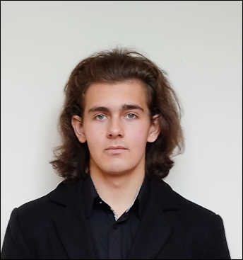
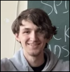
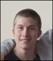
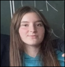
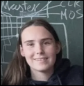

CanSat 2026–2027 · CEPES · Jodoigne
Starship
We’re Starship, a student team from CEPES in Jodoigne, Belgium, taking part in the CanSat competition.

What is the CanSat competition?
CanSat is a competition where student teams design, build, and launch a working model of a satellite the size of a bevarage can.
During descent, the CanSat measures air temperature and pressure and sends the readings to a ground station. Each team should also design a secondary mission of its own.
- Competition rules
- In this European Space Agency education project, students work within size and weight limits, test their design, and present their results.
- Building a miniature satellite
- Teams must fit the sensors, onboard computer, power supply, and radio into a can-sized structure. They write the flight software and set up a ground station to receive the data.
- Launch and analysis
- After the flight, teams analyse the data to see whether they met their mission objectives and use the results to present their analysis and explain their engineering choices.
For more information:

Our Mission
Our goal is to reconstruct the CanSat’s flight in 3D. We’ll use GPS and motion sensors to estimate its position and orientation throughout the descent, including how fast it falls, how it tilts, and how it spins.
We’ll build a data analysis framework that brings together atmospheric readings, motion data, and measurements from the onboard microphone. During the flight, our dashboard will use live telemetry to show how atmospheric conditions and sound change during descent. After recovery, we’ll compare the telemetry with the full onboard recording, analyse the flight in greater detail and establish losses due to radio communication.
We’ll use matching atmospheric sensors at the ground station to record a dynamic reference. Comparing simultaneous readings from the ground and the CanSat will help us distinguish changes with altitude from changes over time. We’ll also use the CanSat’s estimated position relative to the ground station to calculate the bearing and elevation for pointing our Yagi antenna.
Our Team
We’re a team of CEPES students in our fourth to sixth years of secondary school. We study subjects such as informatics and math-science . Together, we’re designing the CanSat, its onboard electronics, the ground station that receives data and software to analyse it.

-

Hlib Ryzhkin
Math-Science · 5
Coordination and Web Development
-

Julien Mondy
Informatics · 6
Embedded Software Development
-

Loric ...
Math-Science · 4
Electronics and CAD
-
Théo Balan
Informatics · 5
Design and Social media manager
-

Alexandra Gotler
Math-Science · 5
Communication and outreach
-

Charlotte Danau
Math-Science · 5
Data Analysis and parachute development
Our Philosophy
“An idiot admires complexity. A genius admires simplicity.”
For us, simplicity starts with choosing sensors that answer specific questions about our descent. The challenge is to understand what each sensor can measure and where its limits are, then get as much out of every reading as we can instead of over engeneering with unrelated features.
Our Sponsors
Sponsor details will be added here.